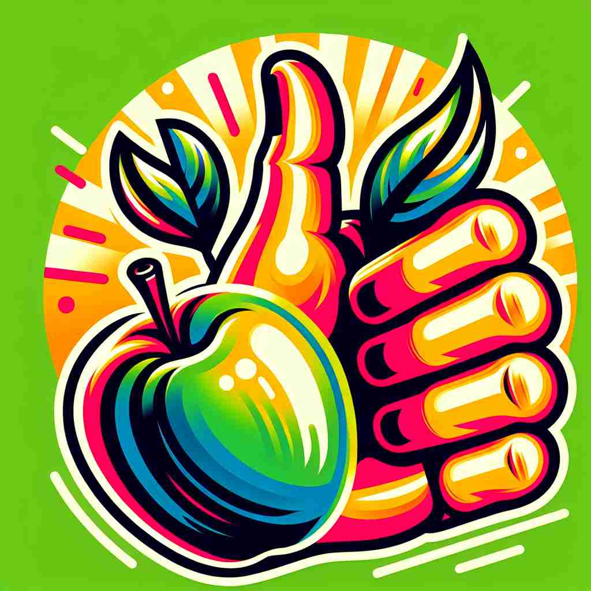
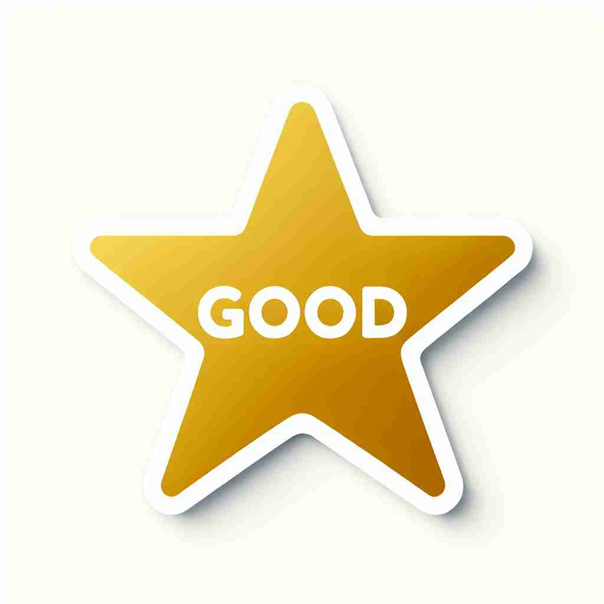

💬 This is a good steak that everyone will enjoy.

💬 This is a good learning environment for students.

💬 This is a good quality apple.

💬 This is a good quality product that everyone loves.
🔈 [gʊd]
🗝️ adj. of high quality or an acceptable standard
🖼️ 在一家时尚的餐厅里，客人品尝了一道精致的牛排，微笑着对服务员说："这真是很好的牛排！做工细腻，每一口都是享受。"这个场景展现了'good'作为高质量或可接受标准的含义。
🔍 通过理解'good'的核心含义是'高质量或达到可接受标准'，可以更容易理解它的各种用法。无论是道德品质、愉悦感受、有益程度、技能水平，还是有效性和行为表现，都可以联想到它们是否达到了某种高标准或可接受的程度。这个核心概念贯穿了'good'的各种含义，有助于更好地记忆和使用这个词。
💬 This is a good steak that everyone will enjoy.
💬 This is a good learning environment for students.
💬 This is a good quality apple.
💬 This is a good quality product that everyone loves.
🌳 这是一个基础词汇，没有词根词缀的结构，非常独立，用来表示“好的”或“善良的”。
💡 可以将“good”与“上升的拇指”图像结合记忆，这通常被用来表示“好”和“赞同”。
🗝️ adj. morally right or virtuous
🖼️ 在一个阳光明媚的公园里，小女孩帮助一位老奶奶过马路。旁观的人纷纷赞叹：“多么善良的孩子！”她的行为完美诠释了'good'作为道德上正确或有德行的含义。
💬 She's a good person who always helps others.
❓ 符合道德标准被视为高质量的品格
🗝️ adj. pleasant or enjoyable
🖼️ 在一个温暖的海滩上，朋友们围坐在篝火旁，悠闲地交流着笑声和故事。每个人脸上都洋溢着快乐，感受到这个美好时光的愉悦。这个场景很好地展示了'good'作为令人愉快的含义。
💬 We had a good time at the party.
❓ 令人愉悦的体验被视为高质量的
🗝️ adj. beneficial or advantageous
🖼️ 在一次商务会议上，经理向团队介绍了一个新项目。他总结道：“这个项目对公司的未来发展非常有利。”这个场景展现了'good'作为有益或有优势的含义。
💬 Exercise is good for your health.
❓ 有益的事物被认为是高质量的
🗝️ adj. skillful or talented
🖼️ 在一个热闹的美术展览中，艺术家的画作吸引了众多观众的目光。观众们惊讶地称赞她的技艺：“她真是个很有才华的画家！”这个场景展示了'good'作为技能娴熟或有才的含义。
💬 He's a good pianist.
❓ 技能高超被视为达到高标准
🗝️ adj. valid or genuine
🖼️ 在一个珠宝店中，店员拿出一枚珍贵的钻石戒指给顾客看，并保证说：“这是一块真正的宝石，质量很好。”这里'showed's目标的/N图象的地方是从工业革命的几乎总体变化中解放出来，h展示了'good'作为有效或真实性的含义。
💬 This coupon is still good for another week.
❓ 真实有效被视为达到可接受标准
🗝️ adj. well-behaved
🖼️ 在一个儿童生日派对上，小男孩表现得非常有礼貌，与每个小朋友分享他的玩具。家长们欣慰地说：“这孩子真是很听话。”这个场景体现了'good'作为行为良好的含义。
💬 The children were very good during the long flight.
❓ 行为得当被视为达到高标准
🗝️ n. that which is morally right or virtuous
🖼️ 在一个哲学课堂上，教授在讨论人类行为的道德规范。他强调说：“追求善良是人类社会秩序的基础。”这里展示了'good'作为具有道德或德行的事物。
💬 Do good whenever you can.
❓ 从形容词延伸为表示道德高尚的事物